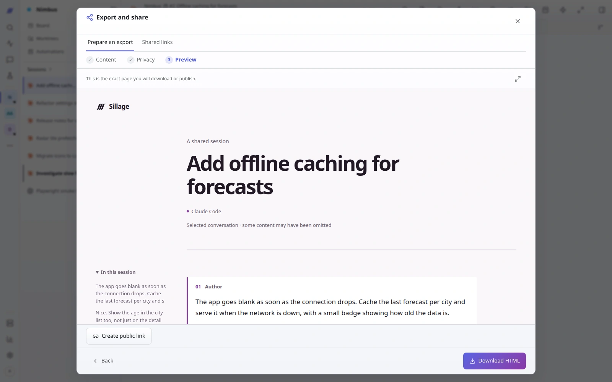
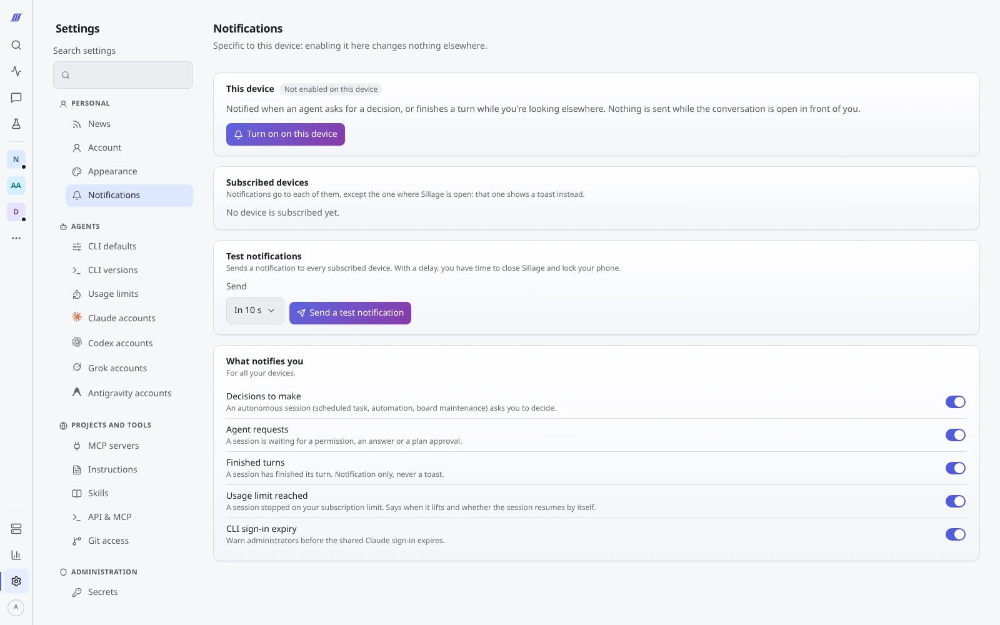

Everything Sillage does, in 56 entries.
Search the list, filter by edition, or open an entry to read how it works.
Conversations
11 featuresEverything around a conversation, from the first prompt to the next agent.

Five native coding agentsUse Claude Code, Codex, OpenCode, Grok Build and Google Antigravity in one workspace.
Sillage runs the agents’ own CLIs with your accounts and tools. Their activity shares a common presentation, while models, permissions, native commands and history import follow what each CLI supports. Conversation forks also follow the integration: Antigravity starts a new session with portable context. See the agent-by-agent guide.
Link to featureConversations that stay with youClose a browser, come back later, and pick up the thread from another connected device.
The host keeps the conversation’s event journal, so you can replay replies and tool activity. Work continues while the host is awake and Sillage is running. Desktop remote access uses your private Tailscale network.
Link to featureA message queue and live steeringWrite the next instruction while your agent works. Queue it, withdraw it, or steer the running turn.
Queued messages are kept on the server. Sending into an active turn depends on the agent: Google Antigravity’s current protocol does not support live steering. The agent guide calls out these differences.
Link to featureSwitch agents without starting overContinue a conversation in another CLI with the original request and recent exchanges still in view.
A handoff passes a budgeted selection of complete messages and selected tool activity, plus references the next agent can read through Sillage. Reasoning, attachments and native tool state are not transferred.
Link to featureReferences between conversationsType @@ to find a session and link to it from another conversation.
References in messages and agent replies show a preview and open the original thread. The Insert menu also explains file references (@), cards (#), commands (/) and skills ($ where supported).
Link to featureTool activity, at your reading paceChoose a timeline, compact console, purpose-based groups, useful previews or quieter activity lines.
Completed sequences can fold when the agent speaks again, while failures stay visible. Open details for arguments, results and file changes. Long histories load progressively, with full tool output on demand.
Link to featureYour own composer layoutKeep model and effort together, and pin the agent controls you use most.
Reorder permissions, speed, account, advisor and other controls available for that CLI. Each agent keeps its own layout. On phones, the model chip stays close and the remaining settings move into the settings panel.
Link to featureA workspace that gets out of the wayUse concentration mode, adjust the conversation width and choose light or dark appearance.
Concentration mode hides navigation and secondary controls while leaving the composer and temporary file panels available. Restore the previous layout with your draft and reading position intact.
Link to featureSearch across your conversationsFind a reply, a decision or a useful command across projects with full-text search.
Search the conversation journal instead of trying to remember which agent or project held the answer. Follow a result back into its original thread.
Link to featureProject-aware dictationSpeak a prompt using a lexicon informed by your project and current branch.
Connect an OpenAI-format transcription endpoint, with an optional cleanup pass after transcription. The project lexicon helps the transcription recognize names and terms from your codebase.
Link to featureA little reading while agents workAdd RSS or Atom feeds and read their headlines while a turn is running.
News is optional and stays off until you enable it. Manage your feeds from Sillage and choose the activity indicator you want to see while you wait.
Link to featureCode and worktrees
10 featuresExplore files, understand the diff and give parallel tasks their own space.

A file explorer beside the conversationBrowse, search, copy and move project files without losing the agent’s thread.
Search filenames and contents, work with multiple selected files, and follow symlinks. The explorer supports large workspaces and keeps the current workspace close to the conversation.
Link to featureAn editor that follows the workOpen files and see the changes your agents write to disk.
The editor refreshes as files change. When you have an unsaved draft, compare it with the disk version before deciding what to keep.
Link to featureGit history and code reviewInspect branches, commits and diffs in the same panel as your files.
Stage changes, commit, and manage branches and remotes. The history draws branches and merges for the current branch or all branches, with a diff inspector for each commit.
Link to featureA checkpoint around every turnOptionally capture the workspace before and after each agent turn, then inspect exactly what changed.
Enable checkpoints per project. Revert files to their state before a turn and optionally fork the conversation from that point. Commits made during the turn remain as uncommitted changes after the revert.
Link to featureParallel work, separate worktreesStart on the project root, an existing worktree, or a branch Sillage creates for the task.
See each session’s branch and worktree state in navigation. Sillage lists trees created from the shell too, with their working sessions, uncommitted files and commits still to merge.
Link to featureFollow a branch through deliveryKnow whether work reached the default branch, including squash merges and linked pull requests.
Delivery checks the local default branch and its fetched origin reference. A GitHub-linked board adds PR state and checks. New commits and remaining files stay visible even after a PR is merged.
Link to featureClean up finished workReview what would be lost before removing a worktree, or clean up merged and missing trees together.
Bulk cleanup excludes trees with active sessions and reassesses each tree before removal. Leftover files are named separately, so a capture or demo script does not get mistaken for work still waiting to merge.
Link to featureTerminals in your workspaceRun commands next to the files and conversation they belong to.
Use the workspace’s terminal panel for manual checks and commands. Windows terminals open PowerShell, preferring PowerShell 7 when installed.
Link to featureYour recurring commands, one click awaySave tests, development servers and debug commands as project actions.
Launch from the project header, workspace panel or command palette. Tasks keep their output and exit code; services use persistent user units on Linux with systemd, with a terminal fallback elsewhere. Agents can propose an action for review before its first launch.
Link to featureImages, audio and video in contextInspect generated images and play attachments directly in conversations and cards.
The image viewer supports zoom, rotation, copy and download. Markdown images resolve in the session’s workspace, including worktrees linked after the conversation began. Audio and video attachments have inline players.
Link to featureProjects and planning
5 featuresKeep tasks, decisions and the sessions doing the work connected.

A place for each projectKeep a project’s sessions, configuration, board, files and worktrees together.
The navigation separates spaces from their contents. On Server, project configuration has a single owner; members can work in the project and read its configuration. Desktop has one local account. Sillage is intended for you and people you trust on the same host.
Link to featureLocal cards and GitHub issuesPlan on a board that brings local work and issues from a linked repository together.
Cards carry descriptions, comments, attachments and sessions. Choose whether a new card stays local or becomes a GitHub issue; issue labels and state map to board columns.
Link to featureConnect related workLink blockers, related work, duplicates, parent tasks, sub-tasks and replacements.
Relations appear in both directions and stay local to Sillage. Tags help organize cards; agents can create them unless the project owner disables that option.
Link to featureKeep the conversation with its taskAttach a session to a card and see that card in navigation, the header and the workspace panel.
Attach from the interface or let an agent use the built-in tool. Sessions in the same project can edit cards, leave comments, create tasks and close or reopen linked GitHub issues.
Link to featureSessions that can coordinateLet one session message another or wait to be notified when it finishes.
When you ask, an agent can start another Sillage session with its own CLI, model, effort and worktree. The new session remains visible like any other and starts with the project’s default permissions.
Link to featureContext and tools
7 featuresInstructions, memory and integrations that are shared across your agents.

Shared project instructionsSet global and project conventions once, and make them available to all five agents.
Edit SILLAGE.md through the interface. Keep the project instructions in Sillage or in the repository’s AGENTS.md / CLAUDE.md. How quickly an edit reaches a running session follows the CLI’s own context lifecycle.
Link to featureProject memory across sessionsKeep the decisions, pitfalls and facts agents learn in one project memory.
Memory is shared across the project’s worktrees. Agents can read and update notes with Sillage tools; you can correct or delete them in the project interface. Each CLI receives the memory through its supported context mechanism.
Link to featureA shared skill libraryDiscover, install, update and manage skills for the agents that use them.
Keep skills global or specific to a project, with visible progress while searching or updating. Sillage distributes the library to Claude Code, Codex, OpenCode, Grok Build and Google Antigravity according to their integrations.
Link to featureMCP servers in one placeDeclare an integration once and choose the agents and projects that receive it.
Manage global servers in Settings and project servers on the project page. Reconnect a server that was unavailable without restarting the session; Claude Code also retries failed servers at the start of a turn.
Link to featureAgent-proposed integrationsAn agent can suggest an MCP server, then hand you a form to review.
The server is added only when you confirm. Enter any secrets yourself: those fields do not go into the conversation journal or back to the model.
Link to featureYour agent accountsChoose among additional supported subscriptions and API accounts from the composer.
Register extra Claude, Codex and Grok accounts in Sillage, and compare subscription usage where the integration supports it. Added accounts are selectable by the Sillage user who registered them. Other agents follow their own account flows; see the agent guide.
Link to featureManage the agent installationsInstall the supported CLIs from Settings and see when their versions need attention.
Sillage keeps a target version for each integration and flags incompatible installed versions. Desktop includes the npm runtime needed to install agents from the app.
Link to featureAutomation
8 featuresSchedule a routine, react to an event, and bring the decisions back to you.

Scheduled agent tasksRun a prompt at an interval, on a cron schedule or at a date you choose.
Each run starts a fresh session with its chosen CLI, model, effort and permissions, plus context from the previous run. Runs sit under the task and have a maximum duration. The host must be awake and Sillage running.
Link to featureCheck first, wake the agent when neededLet a small script decide whether a scheduled task has anything to do.
A successful check starts the agent with its output. A skip result avoids opening a session, so a recurring watch uses tokens only when there is something to investigate. A script proposed by an agent waits for your approval.
Link to featureWebhook-triggered workServerStart a session when a service sends an event, such as a labeled issue or a failed CI run.
Inspect the payload, build conditions and prompts from its fields, and simulate a delivery. GitHub templates, optional sandboxed filters, deduplication and hourly limits help control incoming triggers. Internet-triggered automations need a public Server address.
Link to featureGitHub issue maintenanceOptionally start a session for new issues and carry later comments into that issue’s thread.
Choose the maintenance instructions, agent and worktree behavior. The linked board keeps the issue and its Sillage sessions together.
Link to featureDecisions for autonomous tasksLet an unattended agent leave a question for you and receive the answer in its session.
Enable decision requests per schedule, webhook or GitHub maintenance rule. A question can have an expiry and a fallback choice. Decisions are separate from the CLI’s permission requests.
Link to featureResume after a usage limitReceive a notice when a subscription limit stops a turn, with the time it resets.
Opt into automatic resume and set a maximum wait. Sillage resumes once per limit, unless someone has written or interrupted in the meantime. Scheduled runs are reported without automatic resume.
Link to featureAn API for tasksCreate work, follow its events, answer questions, steer or interrupt a session from your own tools.
The task API uses scoped Bearer tokens with optional project restrictions, separate from browser sessions. Receive a webhook when work finishes, or create projects with an explicitly authorized token.
Link to featureConnect your own tools to SillageGive an external CLI access to project history, boards, instructions and memory through MCP.
Connect over stdio on the host or through SSH, or use Streamable HTTP with a scoped API token and optional project restrictions. Session-to-session messaging stays inside Sillage.
Link to featureActivity and insights
5 featuresFollow the work in flight and understand the results it leaves behind.

An activity wall for parallel workFollow multiple sessions side by side and bring the ones that need you to the front.
The Activity list drives the wall: select what is waiting, running or unread, or open a specific session. Save recurring views with filters or a GitHub-style query.
Link to featureUnderstand token consumptionExplore token usage by period, agent, model, project, account or session.
Daily and monthly charts include reported auxiliary models and subagents. The cost equivalent uses current public API list prices, even for subscription work; it is an estimate, not your bill. Every Sillage account sees the whole instance.
Link to featureCompare models on the same workRun one prompt across agents, models and effort levels, with optional starting files and checks.
Each variant receives the same prompt without personal memory or Sillage’s platform prompt. Compare measurements, pass rates and outputs, rate runs blind, chart a measure and rerun a benchmark over time.
Link to featureCompare the outputs, not just the numbersInspect like-for-like outputs side by side, even when agents choose different filenames.
Export measurements as CSV or JSON. Input token totals include reported cache reads and writes as subsets, and reported auxiliary usage is included. Cost equivalents follow the same public-price approach as Consumption.
Link to featureKnow what is running on your hostSee processes launched by Sillage, their command trees, ports and originating sessions.
The Linux Services view also shows persistent sillage-app-* user services and lets you stop them. It excludes unrelated systemd services and tmux sessions. This view is available on Linux only.
Link to featureExport and sharing
4 featuresShare a result you can review, with just the context you choose.

Conversation exports that work offlineSelect the messages and tool details to include, then download a self-contained HTML page.
The export freezes a copy of the journal: future replies do not change it. Set a title, introduction and optional pseudonym. The artifact includes styles and selected images, works offline and runs no JavaScript.
Link to featureReview before sharingReview detected credentials and personal information, and add your own masks before exporting.
Local rules and Secretlint identify possible secrets, addresses and paths. Choose how much tool detail to show. Local images are opt-in and need visual review; automated detection is not exhaustive. The final preview matches the exported artifact.
Link to featurePublic conversation linksServerPublish a reviewed conversation copy for someone who does not have a Sillage account.
Server requires a configured public URL. Set an expiry or leave a link open-ended, and revoke published copies from the session. Published copies are immutable; deleting the session invalidates its links.
Link to featureShare a complete benchmarkSend a benchmark’s results, selected responses and eligible outputs as a portable ZIP.
Include the prompt, measurements and ratings you choose, or hide model names for blind comparison. Static outputs can remain interactive; outputs needing a build or server have limits. Server can also publish a share page when a public URL is configured.
Link to featureEditions and access
6 featuresChoose the way Sillage runs, with the same core project tools.

Sillage DesktopDesktopA desktop app for macOS Apple Silicon, Windows x64 and Linux x64 or arm64.
Open the app and start working without a Sillage account or password. Its bundled server runs with the app. Agents pause when the host sleeps, and quitting ends running sessions. Desktop and Server keep separate data. Choose a download.
Link to featureSillage ServerServerRun Sillage on a machine you control and open it through your browser.
Use an always-available host for ongoing work and configure private or protected HTTPS access for your devices. Server supports trusted user accounts; agents and terminals share the host system account, so this is not operating-system isolation between users.
Link to featurePrivate access from your devicesContinue on a phone, tablet or another computer through a configured remote connection.
Server can use a VPN or protected HTTPS proxy. Desktop offers a Tailscale switch and QR code in Settings; only devices signed into the machine owner’s Tailscale account are accepted. The desktop app must stay running.
Link to featureAn installable web app with pushServerInstall the Server interface as a PWA and get notified when a session needs you.
Manage subscribed devices and send a test from Settings. Notifications stay quiet while you already have the conversation open. Desktop has in-app feedback but does not offer PWA installation or push notifications.
Link to featureA guided first projectSet appearance, agents, permissions and instructions with a first-run tour.
The tour adapts to the edition: Desktop skips account creation, public address and push setup. Replay the guide from Settings › About when you want a refresher.
Link to featureDesktop updates in the appDesktopDownload new releases in the background and see when an update is ready.
Install from Settings › About with a restart. Running conversations are interrupted and resume with the next message; your data stays in place. Update behavior follows the package and operating system.
Link to featureNo feature matches.
Try another word, or a different edition.